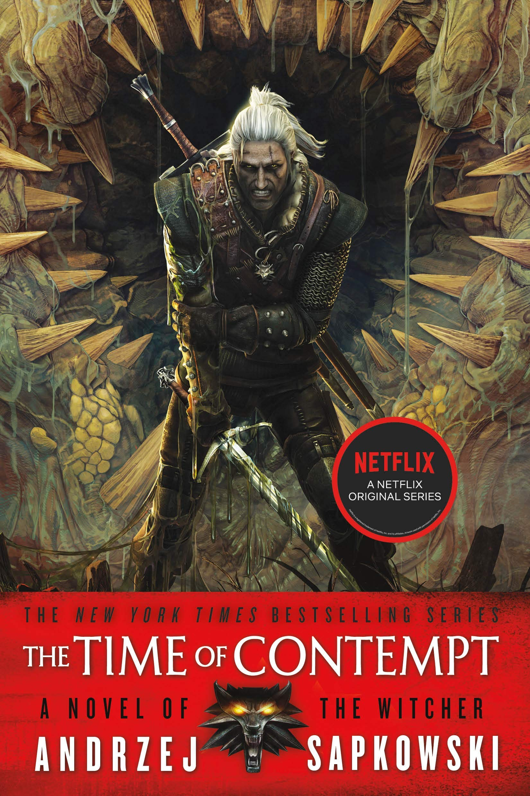
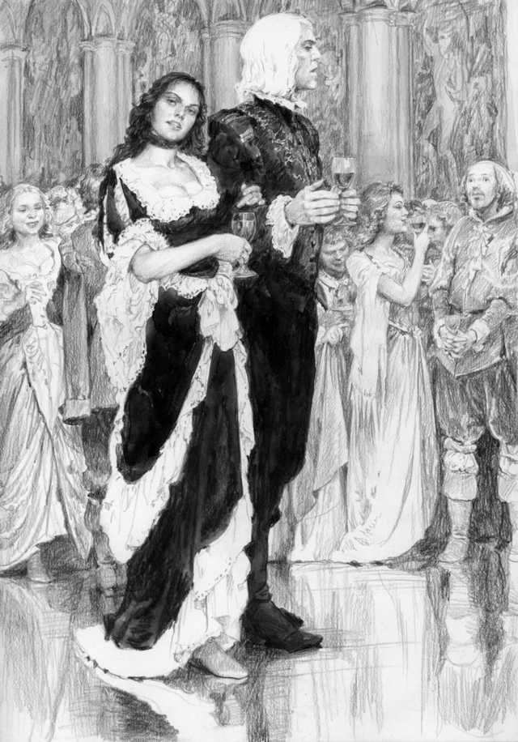
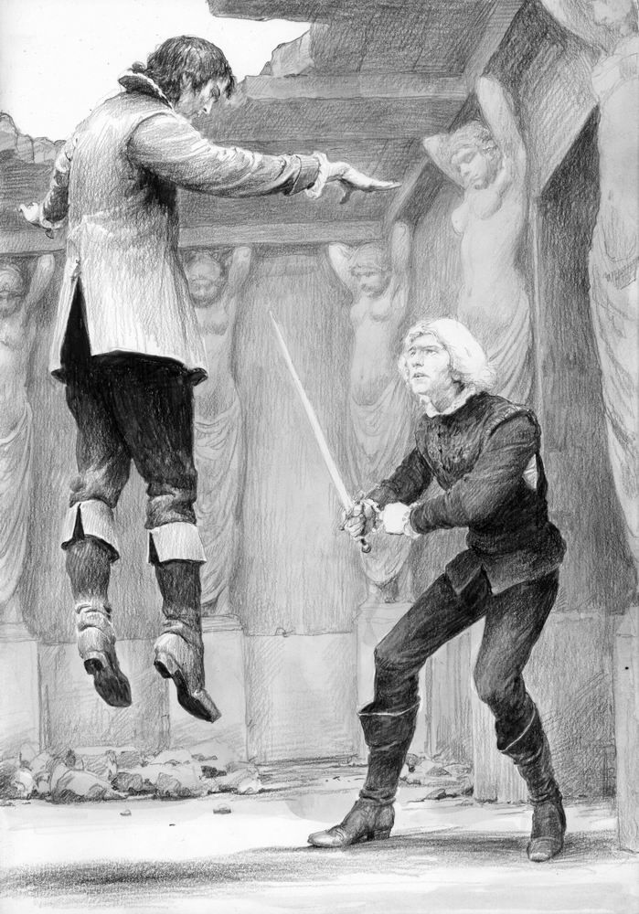

Time of Contempt (UK) or The Time of Contempt (U.S.) (Polish: Czas pogardy) was written by Andrzej Sapkowski, first published in Poland in 1995 by SUPERNOWA, and is the fourth book in The Witcher series and the second novel in the saga. It directly continues on from Blood of Elves, which begins the saga of Ciri and Geralt. The English translation of the novel was originally going to be translated by Danusia Stok but that was eventually changed to David French. It was expected to be published in the fall of 2010. This release date was missed however and saw numerous edits. Gollancz, at the time, was criticized for missing the numerous release dates. This turn of events pushed Baptism of Fire further back. Time of Contempt was first released in the UK on 27 June 2013 (published by Gollancz). A Kindle edition was released simultaneously. A second edition was released on 23 January 2014. A U.S. edition, The Time Of Contempt, was released by Orbit Books on 27 August 2013.
Buy The Time Of Contempt Here
Time Of Contempt US Cover Published 27-August-2013
The story begins where Blood of Elves left off, essentially with Ciri and Yennefer having just left the Temple in Ellander, on their way to Gors Velen, and ultimately Thanedd Island. It is Yennefer's intention that Ciri be enrolled at Aretuza and that she continue her instruction in the use and mastery of magic.
Once they arrive in Gors Velen, Yennefer goes to see her old friend Giancardi Molnar, a dwarven banker. The latter informs the sorceress that her financial movements are being tracked, something Yennefer already suspected, but he arranges an essentially unlimited line of credit for her and makes several financial transfers to cover expenses for Ciri's education. He and Yennefer also agree to allow Ciri to see the sights, escorted by one of Molnar's faithful employees, Fabio Sachs.
While on their excursion, things get quickly out of hand after a Wyvern being held as a sideshow breaks free of its cage, and Ciri uses a magical amulet given to her by Yennefer in case of emergency. Because those who understand magic can sense when magic is being used, Ciri is noticed by two sorceresses. She is mistaken for one of about a dozen students who have recently "escaped" from Aretuza in the kerfuffle leading up to the mages' conference being held there. She is apprehended by no less than the former and current headmistresses of the academy, Tissaia de Vries and Margarita (Rita) Laux-Antille. At first, the sorceresses do not believe Ciri's story, but ultimately, the girl and Fabio manage to convince the headmistresses to check out their story at the bank and things are quickly confirmed by Yennefer and Giancardi. The three sorceresses then decide to discuss events over at the Silver Heron, taking Ciri with them and leaving poor Fabio to deal with his employer.
At the inn, Tissaia and Rita have rented the entire cellar which is actually a bath house and the four "ladies" retire there to relax and chat. It seems that both Rita and Tissaia, but especially Rita have every intention of getting good and drunk and Ciri is dispatched to refill their caraff of wine not very long after it arrives.
While getting the refreshments, Ciri notices a mercenary (Rayla) who orders the innkeeper to open a back door for her — a door which leads directly to the outer walls of the city, bypassing the usual gates and guards. On her second trip to refill the caraff, Ciri uses her new found knowledge and runs away to see Geralt whom she has been told is at Hirundum, not far from Gors Velen. Yennefer, luckily is not far behind. Ciri's flight does, however, provide Geralt and Yennefer with an opportunity to meet up again and to patch things in their relationship before the three set off for Thanedd Island together.
On the island, things are in a tizzy. The girls have been temporarily moved from their usual accommodation within Aretuza to Loxia, the lowest level of the complex as the school itself is being used to accommodate the visiting sorcerers and sorceresses. That evening, Yennefer takes Geralt as her date to the reception, leaving Ciri in her room and ensuring that there is no second flight with magic.
Yennefer And Geralt at A Banquet On Thanedd Isle
After the reception, Yennefer and Geralt retire to their room and re-connect on a more intimate level. After a very fruitful reunion and a bit of sleep, the witcher is awakened by an urge to urinate, but in deference to his hosts, decides against relieving himself in the flower pots outside the window and decides to find the courtyard. This is when he stumbles upon the coup, already taking place. Philippa Eilhart and Dijkstra, a sorceress and spy working for the King of Redania, organizes the coup and plans to reveal the mages working for Emperor Emhyr var Emreis of Nilfgaard.
In the ensuing confusion we find out that Yennefer had brought Ciri before the Chapter on the request of Tissaia and the girl begins to prophesize. Ciri reveals the asssasination of the King of Redania the night before and that Demavend, king of Aedirn has preemptively started an attack on Nilfgaard. The Northern Kings' interest in waging war against the scoia'tael combined with Ciri's revelations infuriates Tissaia, who is against such violence. She inactivates the barrier of casting spells in the school and sides with Vilgefortz in the matter, leading to a deadly battle among mages.
In the meantime Geralt escapes from Dijkstra and rushes in to save Yennefer and Ciri at the school. In the ensuring chaos Yennefer and Geralt fight the invading scoi'tael supporting Vilgefortz, while Ciri flees from the scene. The Black Rider plaguing Ciri's dreams turns out to be a Nilfgaardian soldier that tried to escort Ciri out of Cintra to safety. Geralt finally faces Vilgefortz, who makes him an offer to join him to his side under Emperor Emhyr var Emreis. Geralt refuses and a fight ensues in which Geralt is soundly defeated. Tissaia finally realizes her mistake and along with Triss Merigold's help, takes Geralt to safety.
Emperor Emhyr var Emreis wanted the Chapter of Mages to be broken apart since the sorcerers and mages were the reason for his loss at the battle of Sodden Hill. The break up of the Chapter and the incoming war breaks Tissaia and she commits suicide. Soon after the events at Thanedd Island, a full blown war erupts with Nilfgaard advancing to the north. King Demavend escapes to Redania while Aedirn, Rivia, and Vengerberg soundly falls to Emhyr's grasps. King Foltest of Temeria forms a deal with Emhyr and avoids war on Temeria at the moment. In the meantime Emhyr manages to find a fake Ciri and publically announces his plans to marry her, thus appearing as the rightful king to Cintra.
Ciri escapes via a portal in Tor Lara, also known as the Gulls' Tower, during Geralt's fight with Vilgefortz. She awakens in Korath desert known to many as the 'frying pan' and barely manages to stay alive, thanks to the help of a unicorn, whom she names "Little Horse". When pushed for survival, she relies on her magical abilities involving fire, which invokes more nightmares and hallucinations that forcefully entices her to take revenge on those who abandoned her, which leaves her scarred and promising herself to avoid fire as a source of power.
After escaping the desert, she is captured by bounty hunters of Nilfgaard and manages to escape from them with the help of bandits known as the Rats. She feels safe and gains a sense of belonging among the group as the members faced a similar harsh reality of being abandoned during the times of contempt. Through her skills she learned in Kaer Morhen she impresses the group, which gains her the name Falka. The book also expands on Ciri's prophecy as the bearer of Elder Blood, where it is revealed that she holds great power and her son will herald a new age, following the destruction of the old.
Geralt Fighting Vilgefortz